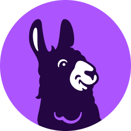

OWASP - Open Web Application Security Project
The OWASP Foundation works to improve the security of software through its community-led open source software projects, hundreds of chapters worldwide, tens of thousands of members, and by hosting local and global conferences.
- OWASP Top 10 - The most critical security risks to web applications
- OWASP Web Security Testing Guide (WSTG)
- OWASP Application Security Verification Standard (ASVS)
- OWASP Vulnerability Categories
- OWASP API Security Top 10
- OWASP Mobile Top 10
- OWASP Cheat Sheet Series
- Fix Security Misconfiguration in Symfony Apps (Medium)
Personal Security Checklist
A curated checklist of 300+ tips for protecting digital security and privacy in 2024. Comprehensive guide covering all aspects of personal cybersecurity.
Network Security & Scanning Tools
Tools and resources for network security assessment, vulnerability scanning, and network diagram generation.
System Hardening & CIS Benchmarks
Best practices and benchmarks for hardening systems and improving security posture.
- CIS Benchmarks Guide (French) - Security Configuration Benchmarks
- CIS Benchmarks Official Site
- System Hardening Guides (French)
- DevSec Hardening Framework
- OpenSCAP - Security compliance and configuration assessment
- Lynis - Security auditing and hardening tool for Unix-based systems
- Ansible Collection Hardening (dev-sec)
- VM Hardening with OpenSCAP & Ansible (Medium)
- Automated System Hardening & Security Audit Script (Medium)
SSH Security & Hardening
Comprehensive guides for securing SSH access and hardening SSH configurations.
- SSH Hardening Guide (French) - Complete SSH Security Tutorial
- SSH.COM Security Guide
- SSH Scan by Mozilla - SSH Configuration Scanner
- ssh-audit - SSH server & client configuration auditor
- Mozilla OpenSSH Security Guidelines
- NVIDIA OpenShell — AI page (sandboxed agent runtime)
- Open Terminal — AI page (self-hosted terminal API for agents)
OpenClaw security hardening
OpenClaw (formerly Clawdbot / MoltBot) can reach APIs, files, and linked accounts; default setups have drawn clear warnings from the security community. If you still self-host it, treat hardening as non-optional. The OpenClaw security hardening guide (Aimaker / Substack, with a technical walkthrough by Fernando Lucktemberg of Next Kick Labs) lays out three progressive tiers: Tier 1 minimum viable isolation and gateway configuration, Tier 2 standard protection for typical hobby or lab use, Tier 3 defense-in-depth (for example egress filtering and rootless Podman). It includes copy-paste-style steps, verification commands, an explicit list of accounts and systems you should never attach, and optional full automation via Ansible.
Security Standards & Compliance
Industry standards, compliance frameworks, and regulatory guidelines for security.
- NIST Cybersecurity Framework
- ISO/IEC 27001 - Information Security Management
- ISO/IEC 42001 - Artificial Intelligence Management System
- GDPR - General Data Protection Regulation
-
Drata — Continuous compliance automation (SOC 2, ISO 27001, and more)
Commercial
-
Vanta — Automated compliance, evidence collection, and trust management

Commercial
Vulnerability Management & Scanning
Tools and resources for identifying, assessing, and managing vulnerabilities.
- National Vulnerability Database (NVD)
- CVE - Common Vulnerabilities and Exposures
- OpenCVE (Nabla-org) — Be notified on Critical and High CVEs for your product
- CISA Known Exploited Vulnerabilities Catalog
- Trivy - Comprehensive Security Scanner
- OWASP ZAP - Web Application Security Scanner
- OSTE Meta Scan - Multi-scanner vulnerability tool
- TheAuditor – AI-powered SAST Security Tool (korben.info)
CI Vulnerability Scanning
Multi-scanner analysis tools.
Pentest-Tools.com
Online penetration testing and vulnerability scanning platform.
SIEM / Malware Detection
Security monitoring and malware detection resources.
DevSecOps Tools & Practices
Tools and practices for integrating security into the DevOps pipeline.
- FluxCD – Encrypting Secrets with HashiCorp Vault (SOPS)
- FastAPI Security Without Slowness (Medium)
- MegaLinter - Multi-language linter (recommended; most tools below are included)
- Trivy - Vulnerability & misconfiguration scanner (containers, IaC, SBOM)
- Gitleaks - Detect secrets in git repos and files
- pre-commit - Git hooks (e.g. detect-private-key, encryption-check)
- Bandit - Security linter for Python code
- pre-commit-terraform - Terraform/Terragrunt hooks (fmt, validate, docs, tflint, trivy)
- Checkov - IaC & container security (Terraform, K8s, Dockerfile, etc.)
- KICS - Find security issues and misconfigurations in IaC
- Hadolint - Linter for Dockerfiles
- CNCF TAG Security
- CodeQL - Semantic Code Analysis Engine
- Semgrep - Fast Static Analysis Tool
- TruffleHog - Find Secrets in Your Code
- GitGuardian - Secrets scanning & remediation
Authentication & JWT
Boilerplates and guides for secure authentication and JWT.
App & Infrastructure Security
Best practices for securing applications and infrastructure platforms.
Cloud Security Resources
Best practices and tools for securing cloud infrastructure and services.
Security Learning Resources
Platforms and resources for learning and improving security skills.